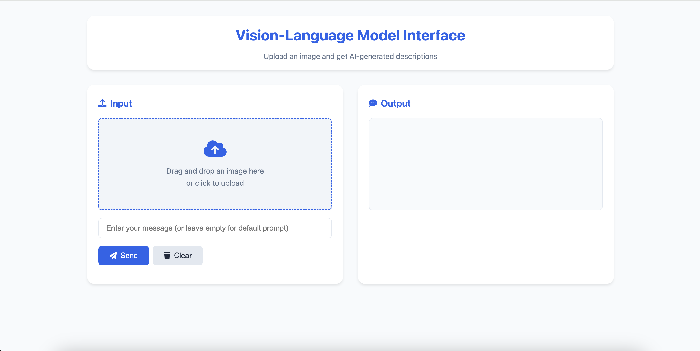

This project, me and a group of 3 worked a Vision-Language Model where given an image, the model
is able to give information on the image. Alongside that, it is able to answer questions regarding
the image with a good accuracy. In the project I worked primarily on the data exploration phase,
understanding the data our dataset contained, and instruction tuning, fine tunes the responses on
a labeled dataset and outputs. This project taught a lot of the team work needed in a project and
the importance of communication.

Demo Website using our modelResults obtained from passing in said image
Project 2: Simple Portfolio Site
This was the final project for this course and we were tasked to create a portfolio using HTML, CSS,
and JavaScript and have it be deployed onto GitHub for eveyone to see. This final project taught me
a lot about bringing in the important concepts on HTML, CSS and JavaScript and putting it together to
make something that has a tangible impact outside the scope of the classroom. It taught important skills
that I can apply to, not only to this class but, my career as well.
The Landing page of Portfolio
Project 3: Synthesizer Project
This was a final project offered for ECE45. In this project me and my group were tasked in creating a synthesizer
and using the concepts that we learned in the course. Using core concepts like Fourier Transforms, modulations,
filters, and etc. My first instance working in a large group project, and learned core group communication. Also
taught a lot about intricacies of the things I was learning. Furthermore, was my first expereince working with
development of any sort of software that can be used by everyone.